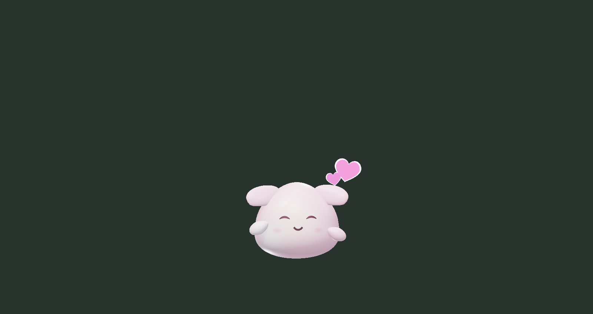
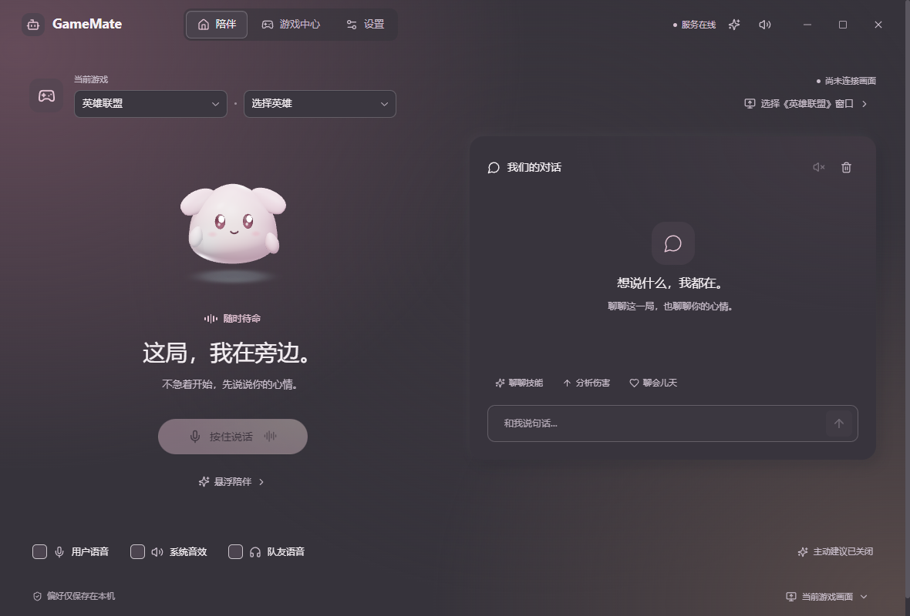
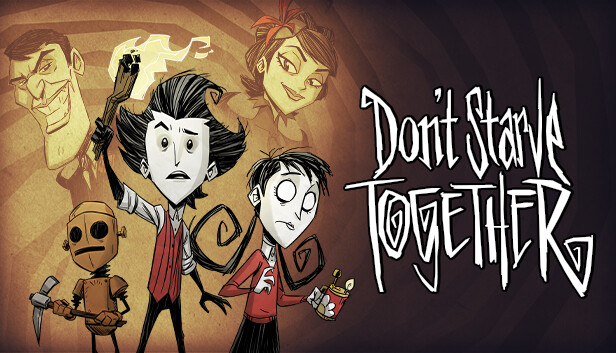

说出来，就能聊
文字、按键说话与持续语音入口。回复以流式文字呈现，并可使用本机系统声音播报。

YOUR GAME. YOUR COMPANION.
一个会倾听、会回应的小伙伴。
想说话时在，想专注时也能安静下来。
文字、按键说话与持续语音入口。回复以流式文字呈现，并可使用本机系统声音播报。
实时 3D 精灵会眨眼、漂浮和回应互动。倾听、思考、说话时，都有自己的小动作。
主界面与桌面悬浮助手随时切换。柔雾粉、晴空蓝两套主题，让陪伴更合你的心意。

GAME KNOWLEDGE
从游戏资料到技能计算，逐步接入。
支持范围与资料限制，始终说清楚。
英雄与技能资料、已覆盖技能的伤害计算，以及连接游戏窗口后的画面分析。
伤害公式仅覆盖部分英雄与技能，不等同于完整对局模拟。

查询原版角色、物品与机制资料。资料保留版本与来源，方便对照。
模组与当前世界数值需核验；原版资料不直接代表模组世界。
GET GAMEMATE
暂时无法获取发布信息。
安装到电脑，创建桌面入口。后续可在应用中检查并安装更新。
发布后提供下载后直接运行，适合先体验。升级时下载新版并替换原文件。
发布后提供安装包包含桌面应用，不包含 AI 服务端、模型 API 配置或语音识别服务。AI 对话与画面分析需连接已配置的 GameMate 服务；语音转写还需配置 ASR。仅使用本机界面与系统播报不代表完整 AI 功能已连接。
查看连接说明当前提供 Windows 11 x64 安装版与便携版，暂不提供 macOS、Linux 或 ARM64 版本。进程音频采集要求 Windows build 20348 及以上；建议使用更新后的 Windows 11。Windows 10 不作为本预览版的完整功能支持平台。
还需要连接 GameMate 服务端，并在服务端配置模型供应商与 API Key。服务默认在本机运行，地址为 http://127.0.0.1:8787。语音转写需要单独配置 ASR。安装包不会携带你的 API Key 或服务配置；具体部署步骤见项目中的服务端部署文档。
麦克风有按键说话与可选持续语音模式，持续模式由你在设置中开启。游戏画面由你选择目标窗口；主动建议与声音通道也可以单独关闭。使用暂停助手可停止持续采集。启用相关 AI 功能时，音频、文字或所选窗口画面可能发送到你配置的服务及模型供应商。
安装版提供安装向导、快捷方式和应用内更新入口，适合日常使用。便携版无需安装，更新时需要重新下载新版。两者都需要满足同样的服务连接条件；便携版也可能在当前用户目录保存应用设置，并不表示所有数据都写在可执行文件旁边。
目前英雄联盟提供英雄资料与部分技能伤害分析，饥荒联机版提供原版资料查询。其余游戏仅展示预留位置。资料、公式和画面理解均有覆盖范围与版本限制，不能保证对每个问题都给出准确答案。
安装版可在应用设置中手动检查更新，下载完成后由你确认重启安装；便携版请从本页或 GitHub Releases 下载新版。服务端与桌面端需要保持兼容，发布日志会说明对应变化。